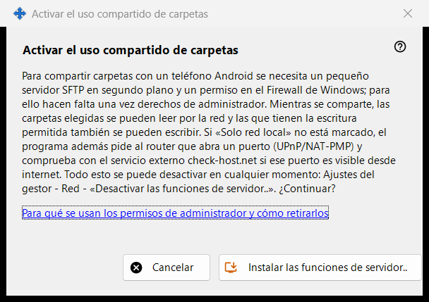
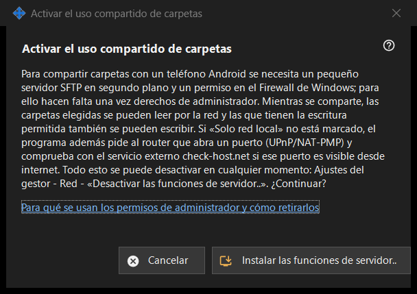

Activar el uso compartido de carpetas
Para qué sirve
Pide permiso para instalar la parte de servidor del uso compartido: un pequeño servidor SFTP en segundo plano y una excepción del Firewall de Windows. Se abre desde el botón «Activar las funciones de servidor..» de la ventana principal y desde los asistentes, y necesita permisos de administrador una sola vez.


En este orden
- Lee la explicación.
- Pulsa «Instalar las funciones de servidor..».
- Confirma la solicitud de administrador de Windows.
- Espera a la línea de resultado; si todo va bien, la ventana indica que el uso compartido de carpetas está activado.
- Pulsa «Cancelar» para salir sin cambios.
Los elementos
Qué hace
Compartir carpetas con un teléfono Android requiere un pequeño servidor SFTP en segundo plano y un permiso del Firewall de Windows. Mientras el uso compartido está activado, las carpetas elegidas se pueden leer por la red, y las abiertas para escritura también se pueden escribir. Si no está marcada la opción de solo red local, el programa también pide al router que abra un puerto (UPnP/NAT-PMP) y comprueba la dirección mediante un servicio externo.
Resultados
«Listo. El uso compartido de carpetas está activado.»; «Uso compartido no activado: no se concedieron permisos de administrador.» cuando se rechaza la solicitud (no cambia nada y puedes reintentarlo); o un fallo del firewall, ante el cual la ventana pide volver a intentarlo y enviar el registro: Ajustes del gestor - Ayuda - «Exportar registros para análisis».
Permisos de administrador y cómo retirarlos
El enlace explica para qué se usan los permisos. Para deshacerlo, usa «Desactivar las funciones de servidor..» en los ajustes del gestor: el uso compartido se detiene, los teléfonos conectados se desconectan y se elimina el permiso del firewall. La lista de carpetas y la contraseña se conservan, y todo se puede volver a activar.
Ajustes del gestor · Ajustes de uso compartido SFTP · Ajustes del servidor de intercambio